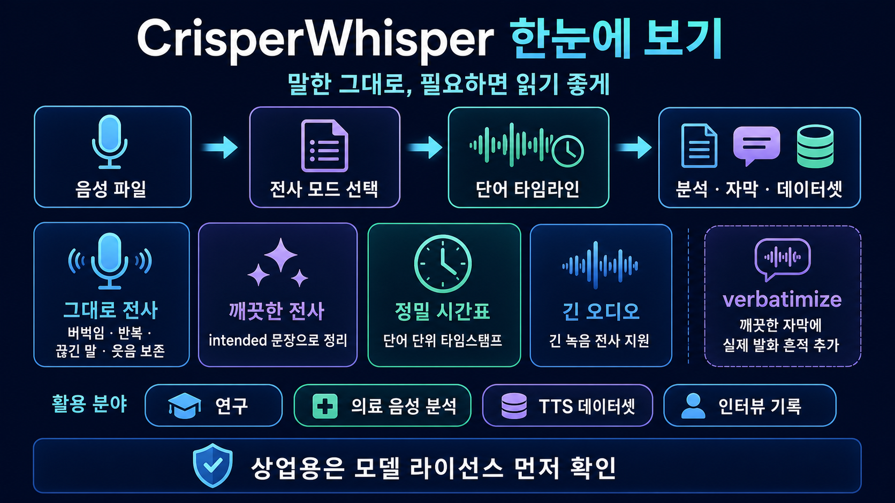

VERBATIM ASR · WORD TIMESTAMPS말한 그대로 남기는
말한 그대로 남기는
고정밀 음성 전사
CrisperWhisper는 버벅임, 반복, 끊긴 말, 웃음 같은 발화 흔적을 보존하거나 읽기 좋은 문장으로 정리하는 방식을 선택할 수 있는 Python 음성 인식 패키지야
nyrahealth/CrisperWhisper 바로가기
CrisperWhisper는 버벅임, 반복, 끊긴 말, 웃음 같은 발화 흔적을 보존하거나 읽기 좋은 문장으로 정리하는 방식을 선택할 수 있는 Python 음성 인식 패키지야
nyrahealth/CrisperWhisper 바로가기